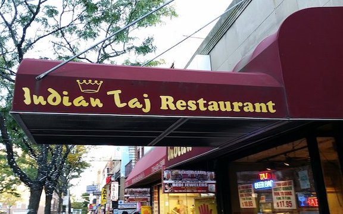
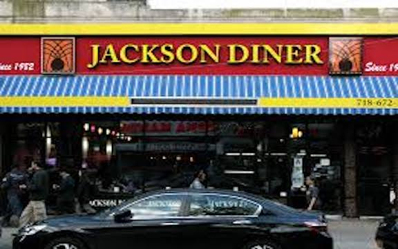
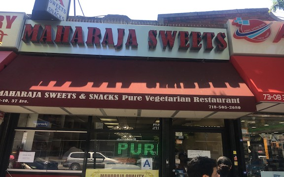
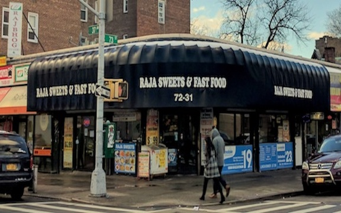

Restaurants
I am sure you call know the basics of Indian cuisine already. Currys, naans, rice, all that good stuff.
However, what you might not know is the street food and dessert part of Indian cuisine. Whether you
love spicy and crunchy food or sweet and soft food, look down below, and you'll find what you want.

Indian Taj Restaurant

Jackson Diner
I have been to this restaurant and it's awesome! I recommend eating the paneer pasanda (spicy, of course)!

Maharaja Sweets
Here, you can get some Indian sweets and desserts. Some of the most popular ones are gulab jamun and ladoos (they come in many different varieties).

Raja Sweets and Fast Food
This is another place where you can get sweets. Over here, they also have Indian fast food dishes such as pani puri, sev puri, dahi puri, samosa chaat, etc.
Previous
Next